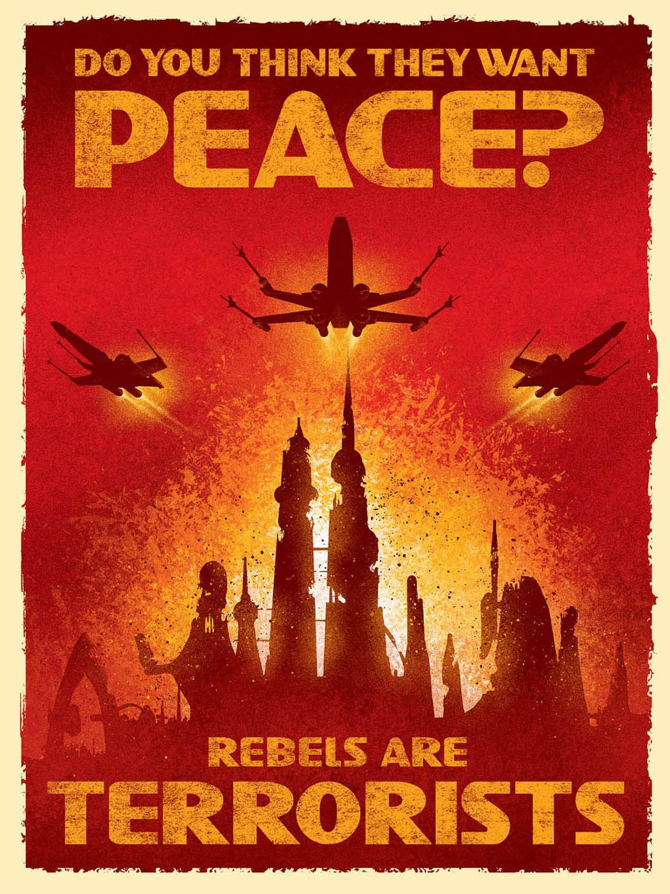

 WHEEEEEEEEL OF FORTUUNNNE!
WHEEEEEEEEL OF FORTUUNNNE!
This section will not just cover the Rebels, but also the Republic. The Rebels, seen as “saviors”, were nothing more than corrupt leaders who wanted power.
Many claim that the Empire was destructive, but the Rebels were far more. Don't believe me? Then let me bring to you: The Death Star.
Home to at least 1,161,293 Imperials, at least what the Rebels claim.
But during the Battle, or should we say, massacre of Yavin, there was much more.
800 Million were killed by the Rebels. You read the number right. And even that huge death toll wasn't all that they did.
The rebels did this all to bring back the Republic. Many think that the Republic is the good guys. Well, it wasn't. The Republic was built on slavery, corruption, and civil war. Dont believe me?
In the prequels, the Wookies on Kashyyk were exploited, them being forced into battle as pawns, only getting decimated. What about the Empire? Left alone. The Ewoks on Endor were allowed to live
as they pleased, even with an Imperial base there. You may bring up the Death Star blowing up Alderaan, but reconsider. The Death Star was under the command by
Admiral Wilhuff Tarkin, not Lord Vader or Emperor Palpatine.
Plus, while Alderaan was said to be a "peaceful" state, reconsider. Leia, who said this, just lied about the location of a Rebel base. And who was the Senator of Alderaan?
Senator Bail Organa, who just so happened to be a Republican Senator,
and a supporter for the Rebellion. So, was Alderaan really a "peaceful planet"? My point.
{kind=link}
{kind=link}